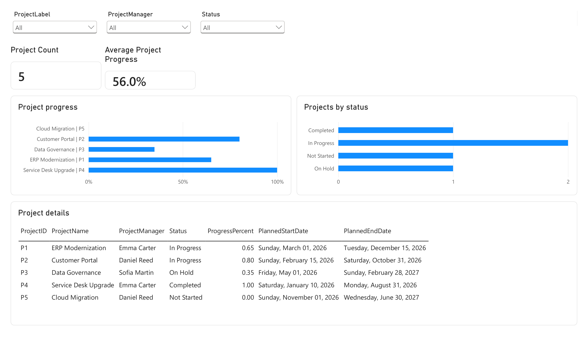
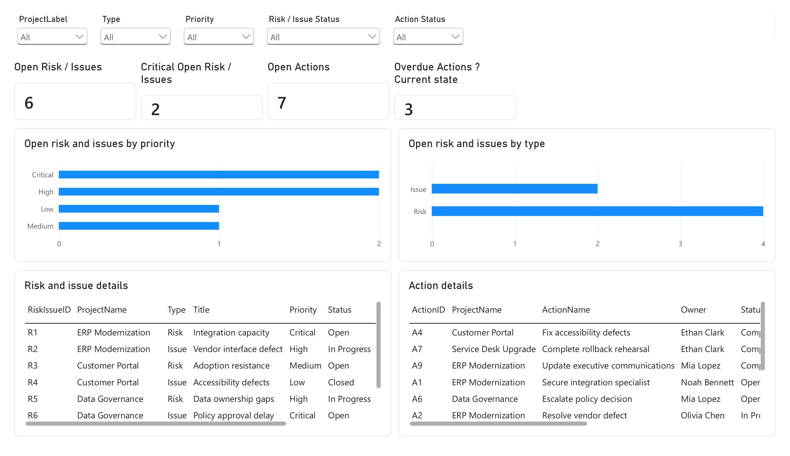
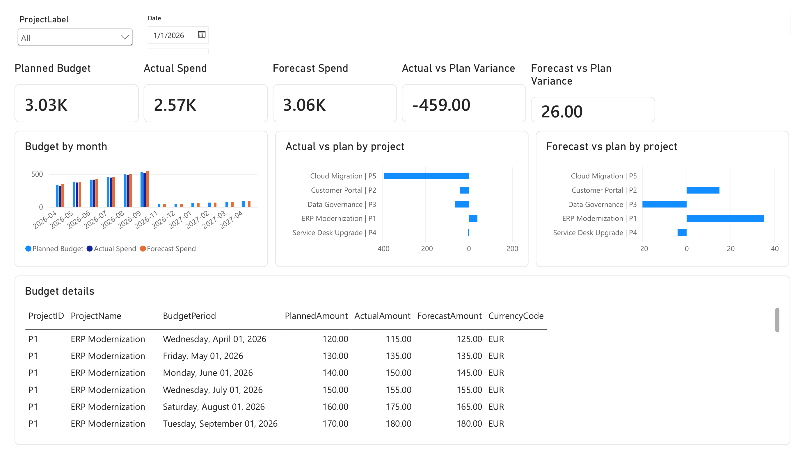
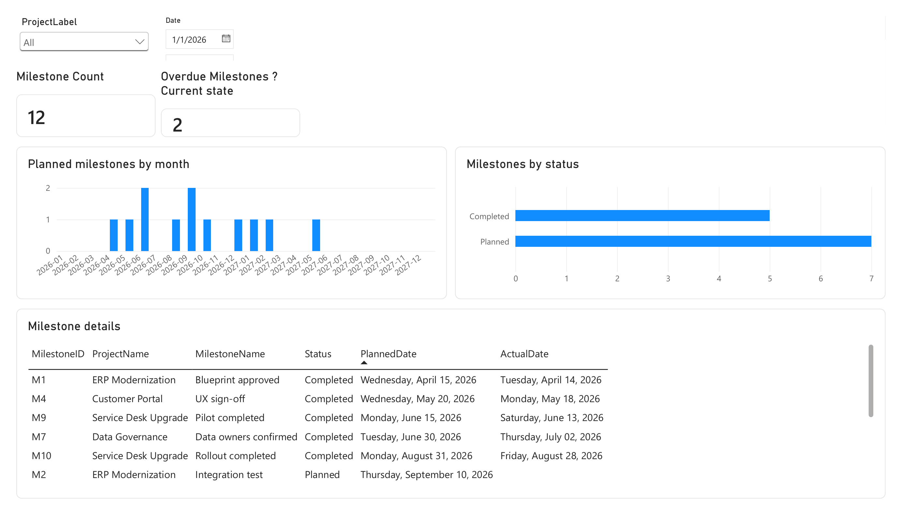

PMO reporting in Power BI, ready to use.
PMO Control Center turns a structured Excel workbook into a clear project portfolio dashboard for projects, milestones, risks, actions and budget — without rebuilding a PMO reporting model from scratch.

A Power BI PMO dashboard template for project portfolio reporting.
PMO Control Center is a reusable reporting foundation for PMO teams that need portfolio visibility without designing the semantic model, measures and report pages from zero.
Maintain the supplied Excel structure, refresh the Power BI template and use five focused pages for executive reporting and operational follow-up.
PMO teams, portfolio managers, transformation teams, project managers and organizations that currently consolidate project reporting in Excel and want a structured Power BI starting point.
Built for practical PMO visibility.
Track the core information needed for project portfolio reporting in Power BI, from high-level status to exceptions and financial follow-up.
Five focused Power BI PMO dashboard pages.
See the actual V0 report pages for executive overview, portfolio monitoring, milestones, risks and actions, and budget reporting.




Everything you need to get started.
The download includes the Power BI template, clean and demo Excel workbooks, plus the documentation required to understand the data structure and first-use workflow.
- PMO-Control-Center-Template.pbit
- PMO-Control-Center-Input.xlsx
- PMO-Control-Center-Demo.xlsx
- README.md
- QUICK-START.md
- DATA-DICTIONARY.md
- RELEASE-NOTES.md
- MANIFEST.json
From Excel to Power BI in five steps.
The packaged workflow uses a structured Excel input file and Power BI Desktop.
Enter your portfolio data using the provided Excel structure.
Launch the supplied Power BI template.
Point the template to your Excel workbook.
Load the data into the prepared model and report.
Use the five dashboard pages for PMO reporting and follow-up.
Requirements.
PMO Control Center is designed as a straightforward desktop template workflow.
Clear scope, no hidden claims.
PMO Control Center V0 focuses on practical Excel-to-Power-BI portfolio reporting.
- Row-Level Security (RLS) or writeback
- Timesheets or resource capacity planning
- Detailed Gantt scheduling
- External system connectors
- Embedded AI or historical snapshots
- Advanced what-if simulation
- Multi-currency conversion
Frequently asked questions.
What is PMO Control Center?
PMO Control Center is a ready-to-use Power BI PMO dashboard template that uses a structured Excel workbook as its input source.
Can I use my own project data?
Yes. Use the provided Excel input workbook as the structure for your own projects, milestones, risks, issues, actions and budget data.
Do I need to rebuild the Power BI model?
No. The package includes a reusable Power BI template with the semantic model, measures, relationships and report pages already prepared.
Is demo data included?
Yes. A populated demo workbook is included so you can explore the dashboard before loading your own data.
Can I customize the report?
Yes. You can adapt the Power BI template for your own internal reporting needs, subject to the product license.
Does the product include Power BI Service deployment?
No. Power BI Service publishing, workspace setup, gateways and organizational deployment are outside the scope of this version.
Questions before or after purchase?
Contact MetricKiln for product and licensing questions. Custom Power BI implementation is not included with the product.
Start with a working Power BI PMO reporting foundation.
One-time purchase. Download the template, Excel workbooks and documentation from your Lemon Squeezy order.